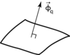

heat_energy_flux
property

Source: Wikipedia
Wikipedia Page (Something wrong with this association? Let us know.)
Wikidata Page (Something wrong with this association? Let us know.)
Occurs in:
- soil__downward_component_of_heat_energy_flux
- atmosphere_bottom_air_advection__heat_energy_flux
- atmosphere_bottom_air_convection__heat_energy_flux
- atmosphere_bottom_air_diffusion__heat_energy_flux
- glacier_bed_geothermal-conduction__heat_energy_flux
- glacier_bottom_surface_frictional-conduction__heat_energy_flux
- glacier_bottom_surface_geothermal-conduction__heat_energy_flux
- land_surface_soil_conduction__heat_energy_flux